Nossa história começou em 2007, quando o empresário Orlando (Buko) Kaesemodel Filho fundou o Instituto Lico Kaesemodel, com o objetivo de proporcionar apoio e inclusão social às comunidades por meio de diversos projetos. A criação do instituto foi uma maneira de concretizar todo o trabalho social que a família Kaesemodel já desenvolvia ao longo de várias gerações.
Em 2021, como forma de homenagear nosso presidente e mantenedor, que sempre incentivou todas as nossas ações, o então Instituto Lico Kaesemodel passou a se chamar Instituto Buko Kaesemodel, não alterando em nada a linha adotada, as pesquisas e a equipe.
Em todos esses anos de história, o instituto realizou várias ações em benefício da sociedade, principalmente com a idealização do Programa Eu Digo X, trabalhando a cada ano em uma escala maior e com atividades cada vez mais robustas.
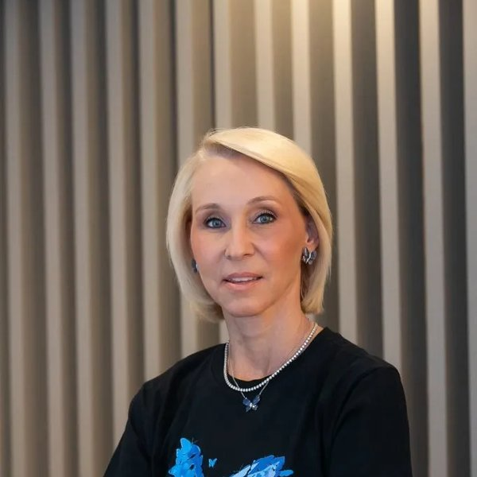
Sabrina P. Muggiati
Idealizadora
Idealizadora do Programa Eu Digo X, empresária e mãe de um adolescente com X Frágil, o Jorge, razão de nossa existência.
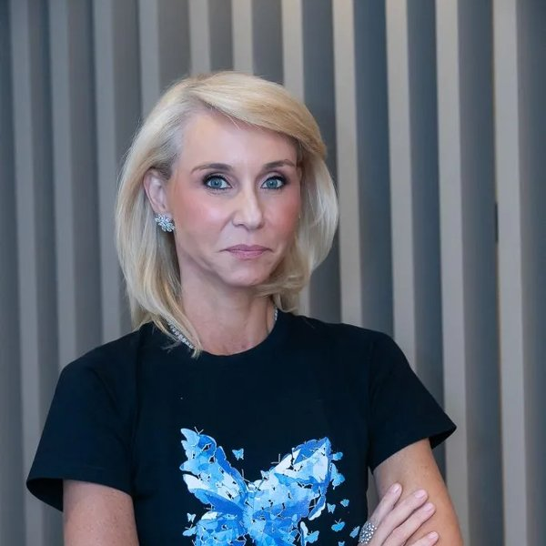
Rafaela Kaesemodel
Vice-Presidente
Formada em Administração com ênfase em Comércio Exterior pela Universidade Positivo.
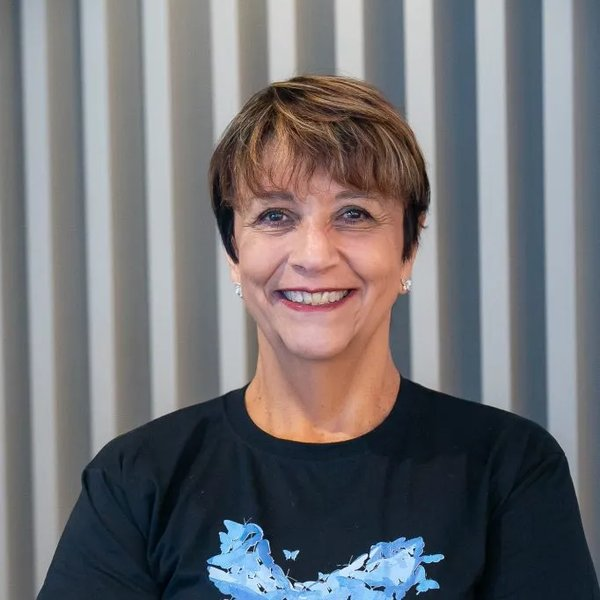
Luz María Romero
Gestora
Formada em Psicologia pelo Instituto Tecnológico de Sonora/México. Pós-graduada em Saúde Coletiva pela Universidade Positivo. Formada em Coach pela UP.
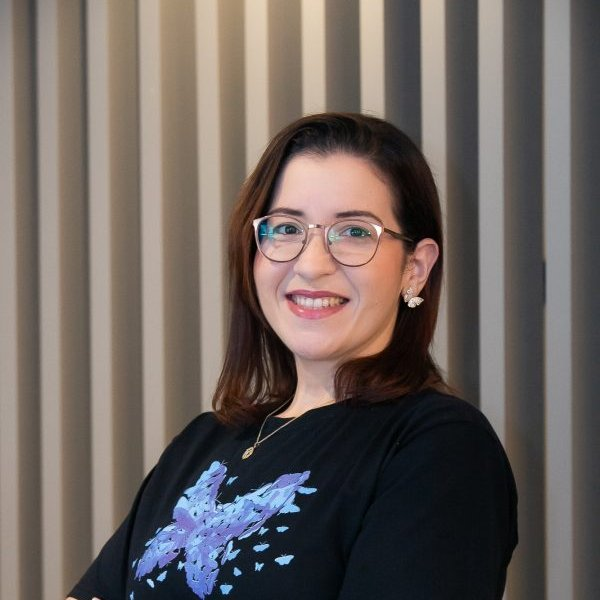
Ítala Fabiana Santos do Nascimento
Assessora de desenvolvimento institucional
Formada em Psicologia pela Universidade Federal de Pernambuco (UFPE) e em Direito pela PUCPR.
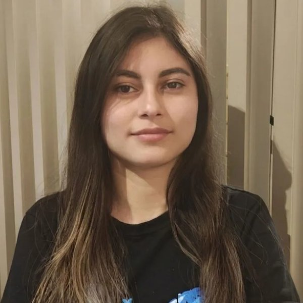
Sonia Mara Rocha
Coordenadora do Programa Eu Digo X
Formada em Biotecnologia pela PUCPR. Mestranda em Neurogenética e Bioinformática pela Case Western Reserve University (CWRU) e pela PUCPR.
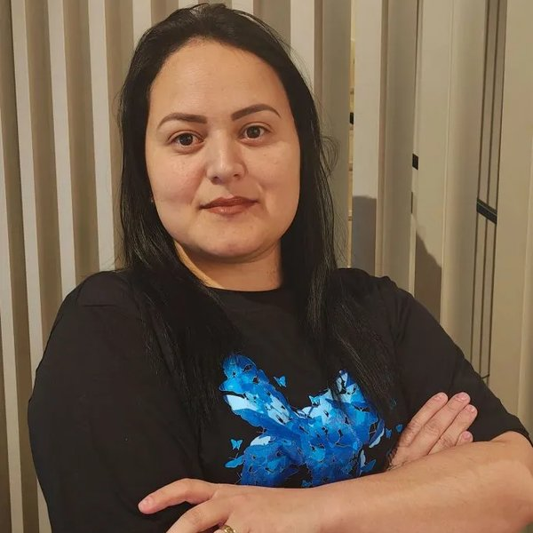
Beatriz Aleixo
Assistente Administrativa
Responsável pelo suporte administrativo do programa.
Profissionais de diversas áreas que apoiam o programa de forma voluntária.
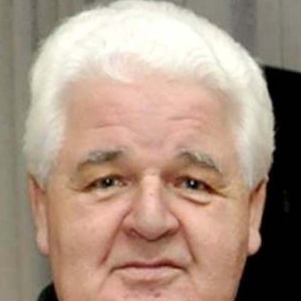
Dr. Rui Pilotto
Graduação em História Natural/Biologia (UFPR, 1969) e Medicina (UFPR, 1983), mestrado em Genética (UFPR) e doutorado em Genética (UNICAMP). Experiência em Genética Médica e Clínica, com ênfase em Aconselhamento Genético. Professor Associado na UFPR, Departamento de Genética.
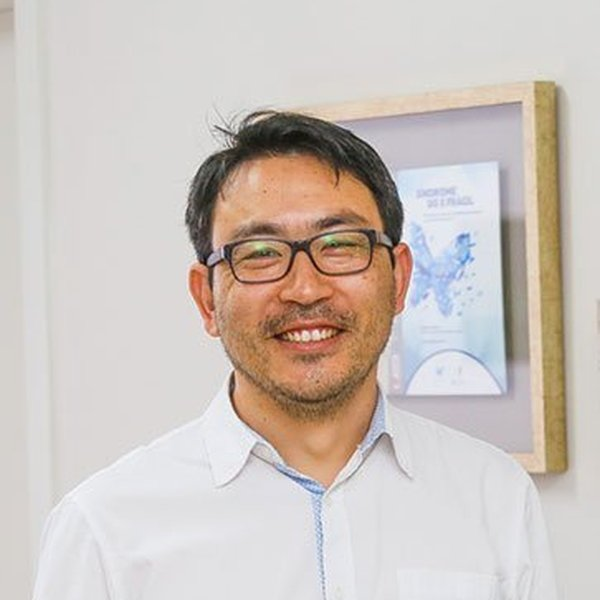
Dr. Roberto H. Herai
Bacharel em Informática (UEPG), mestrado em Engenharia Elétrica e Computação (UNICAMP) e doutorado em Genética e Biologia Molecular (UNICAMP). Pós-doutorados na UNICAMP e na University of California San Diego. Professor e pesquisador da Escola de Medicina da PUCPR. Revisor técnico da cartilha do Instituto.
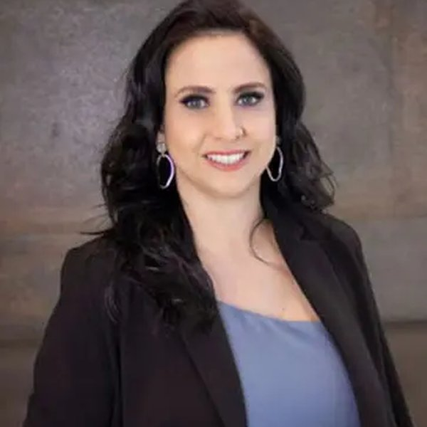
Renata Farah
Advogada especializada em direito médico e à saúde. Presidente da Comissão de Direito à Saúde da OAB/PR. Pós-graduanda em Direito Médico pela Universidade de Coimbra.
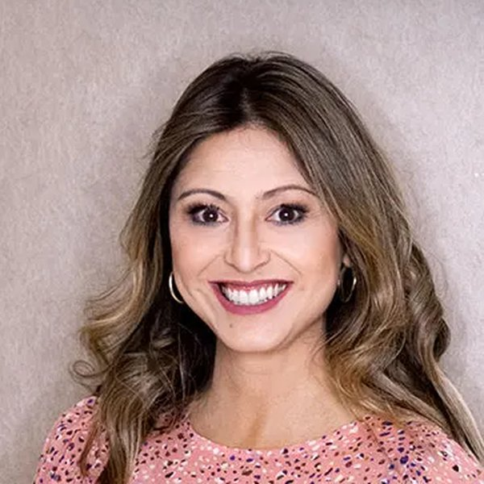
Melissa Kanda Dietrich
Advogada especializada em direito médico e à saúde. Secretária da Comissão de Direito à Saúde da OAB/PR. Pós-graduanda em Direito Médico pela Universidade de Coimbra.
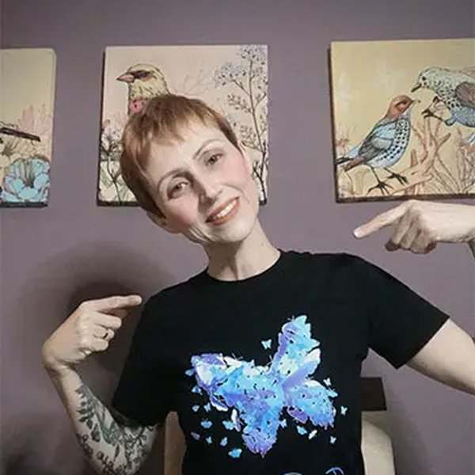
Dra. Silvia Rodrigues
Fisioterapia (Universidade Positivo) e Pedagogia (Uninter). Especialista em Comportamento Atípico pela UCLA — Programa Peers. Especializações em Neuropsicologia Educacional e Neuropediatria. Sócia-proprietária da Meaningful Learning Curitiba.
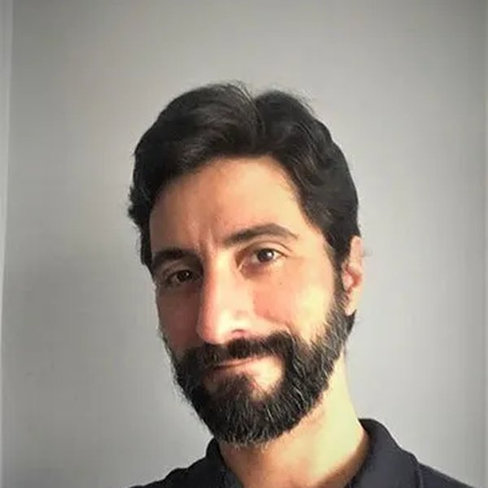
Fábio Alberto Silva
Pedagogo especializado em mediação da aprendizagem, TEA (Transtorno do Espectro Autista), Ambientes Virtuais de Ensino (UC Irvine) e Design Instrucional (Universidade de Illinois). Mestrando em Tecnologia da Educação (UBC).
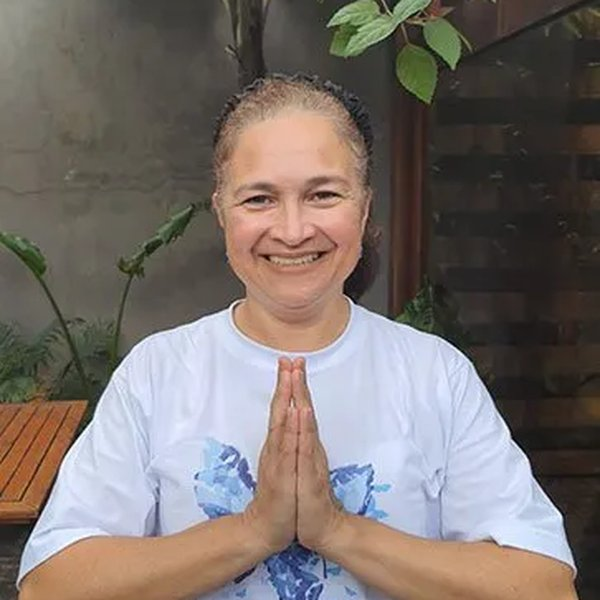
Aline Tatsch Dias
Professora, palestrante e terapeuta alternativa com formação em Ayurveda, Yoga, Reiki e Aromatologia. Fundadora da Ser Inteiro. Especialização em Saúde da Mulher pelo Ayurveda e Yoga, graduada em Ciências Econômicas pela UFPR.
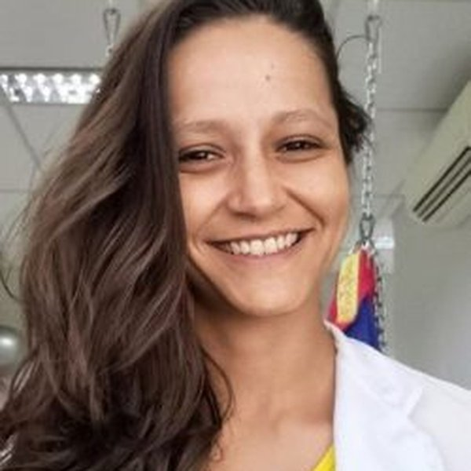
Anahi Romero
Terapeuta Ocupacional graduada pela UFPR. Pós-graduada em Desenvolvimento Infantil pela Child Behavior Institute of Miami. Certificação em Integração Sensorial pela University of Southern California (USC). Atua com desenvolvimento infanto-juvenil e integração sensorial.